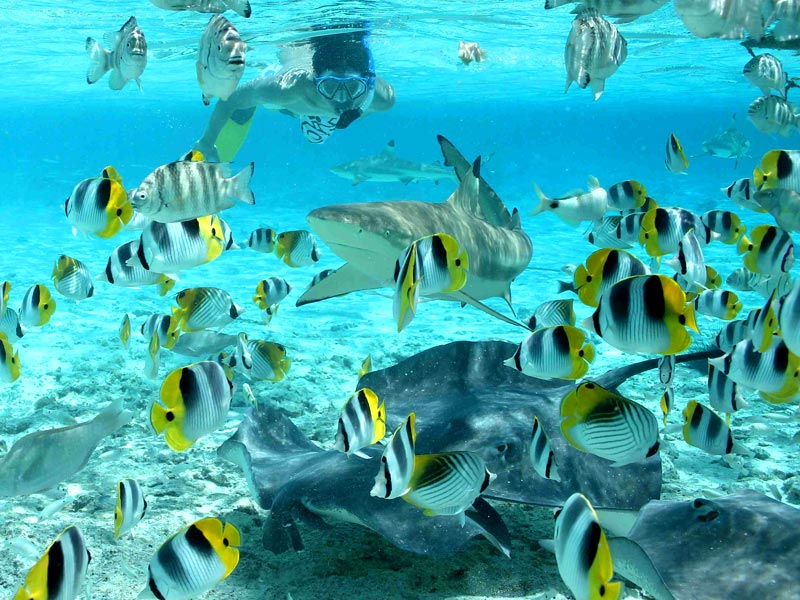
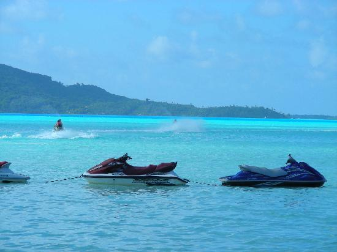
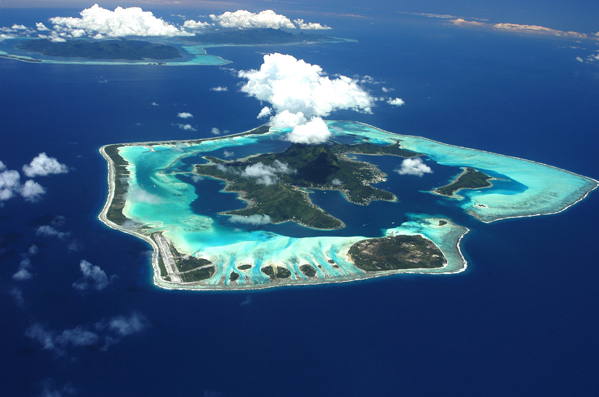

Snorkeling
Bora Bora is famous for the clear, blue, beauitful water surrounding the island, but beneath the surface of the waters is a whole new alien world. You will see wildlife which you never knew existed. From sea turtles to dolphins and a large range of other fish, and even a tropical variety of colourful underwater plants which you can freely explore when you go snorkeling.
Jet Skiing
The crystal clear water is an invitation to have fun on the water. You can have plenty of fun if you decide to take up on the breathtaking adventure of jet skiing. You can either share a jet ski or ride one by yourself, the choice is yours. You can explore around the whole coasts of Bora Bora and experience wonderful scenery whilst on a speedy jetski.
The Full Island Tour
If you're interested in finding out more bout the island when you are there, you will definately want to have a look at the full island tour of Bora Bora where all the mysteries will be explained. Including a thorough talk about the history of the island and how it came out to be so appealing. You will get to see the island inside and out and truely admire the beauty of it.
